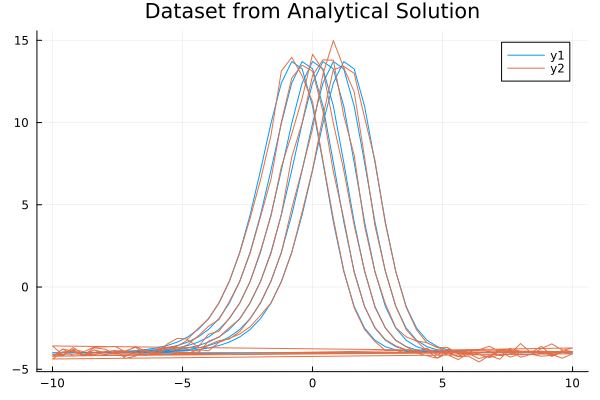
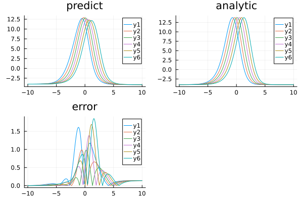

Using ahmc_bayesian_pinn_pde with the BayesianPINN Discretizer for the Kuramoto–Sivashinsky equation
Consider the Kuramoto–Sivashinsky equation:
\[∂_t u(x, t) + u(x, t) ∂_x u(x, t) + \alpha ∂^2_x u(x, t) + \beta ∂^3_x u(x, t) + \gamma ∂^4_x u(x, t) = 0 \, ,\]
where $\alpha = \gamma = 1$ and $\beta = 4$. The exact solution is:
\[u_e(x, t) = 11 + 15 \tanh \theta - 15 \tanh^2 \theta - 15 \tanh^3 \theta \, ,\]
where $\theta = t - x/2$ and with initial and boundary conditions:
\[\begin{align*} u( x, 0) &= u_e( x, 0) \, ,\\ u( 10, t) &= u_e( 10, t) \, ,\\ u(-10, t) &= u_e(-10, t) \, ,\\ ∂_x u( 10, t) &= ∂_x u_e( 10, t) \, ,\\ ∂_x u(-10, t) &= ∂_x u_e(-10, t) \, . \end{align*}\]
With Bayesian Physics-Informed Neural Networks, here is an example of using BayesianPINN discretization with ahmc_bayesian_pinn_pde :
ahmc_bayesian_pinn_pde is provided by the NeuralPDEBPINNExt package extension. To use it, load AdvancedHMC, MCMCChains and LogDensityProblems alongside NeuralPDE:
using ModelingToolkit, NeuralPDE, SciMLBase, AdvancedHMC, MCMCChains, LogDensityProblemsusing ModelingToolkit, NeuralPDE, SciMLBase, AdvancedHMC, MCMCChains, LogDensityProblems,
Lux, ModelingToolkit, LinearAlgebra
using Distributions
import DomainSets: Interval
using IntervalSets: leftendpoint, rightendpoint
using Plots, MonteCarloMeasurements
@parameters x, t, α
@variables u(..)
Dt = Differential(t)
Dx = Differential(x)
Dx2 = Differential(x)^2
Dx3 = Differential(x)^3
Dx4 = Differential(x)^4
# α = 1
β = 4
γ = 1
eq = Dt(u(x, t)) + u(x, t) * Dx(u(x, t)) + α * Dx2(u(x, t)) + β * Dx3(u(x, t)) +
γ * Dx4(u(x, t)) ~ 0
u_analytic(x, t; z = -x / 2 + t) = 11 + 15 * tanh(z) - 15 * tanh(z)^2 - 15 * tanh(z)^3
du(x, t; z = -x / 2 + t) = 15 / 2 * (tanh(z) + 1) * (3 * tanh(z) - 1) * sech(z)^2
bcs = [u(x, 0) ~ u_analytic(x, 0),
u(-10, t) ~ u_analytic(-10, t),
u(10, t) ~ u_analytic(10, t),
Dx(u(-10, t)) ~ du(-10, t),
Dx(u(10, t)) ~ du(10, t)]
# Space and time domains
domains = [x ∈ Interval(-10.0, 10.0),
t ∈ Interval(0.0, 1.0)]
# Discretization
dx = 0.4;
dt = 0.2;
# Function to compute analytical solution at a specific point (x, t)
function u_analytic_point(x, t)
z = -x / 2 + t
return 11 + 15 * tanh(z) - 15 * tanh(z)^2 - 15 * tanh(z)^3
end
# Function to generate the dataset matrix
function generate_dataset_matrix(domains, dx, dt)
x_values = -10:dx:10
t_values = 0.0:dt:1.0
dataset = []
for t in t_values
for x in x_values
u_value = u_analytic_point(x, t)
push!(dataset, [u_value, x, t])
end
end
return vcat([data' for data in dataset]...)
end
datasetpde = [generate_dataset_matrix(domains, dx, dt)]
# noise to dataset
noisydataset = deepcopy(datasetpde)
noisydataset[1][:, 1] = noisydataset[1][:, 1] .+
randn(size(noisydataset[1][:, 1])) .* 5 / 100 .*
noisydataset[1][:, 1]306-element Vector{Float64}:
-4.19985139712214
-3.7780432217105333
-3.8978103684884036
-4.130191986961965
-3.8226374925446147
-3.989370955532563
-3.845176042912663
-4.33948601269339
-4.201551949789292
-3.8162491730732166
⋮
-4.169415720536901
-4.39084661574528
-3.7879120198159204
-4.1251989125280755
-4.0766335126586375
-3.890611895459594
-4.222171321602996
-3.9650052464986962
-4.067543198837052Plotting dataset, added noise is set at 5%.
plot(datasetpde[1][:, 2], datasetpde[1][:, 1], title = "Dataset from Analytical Solution")
plot!(noisydataset[1][:, 2], noisydataset[1][:, 1])
# Neural network
chain = Chain(Dense(2, 8, tanh), Dense(8, 8, tanh), Dense(8, 1))
discretization = NeuralPDE.BayesianPINN([chain],
GridTraining([dx, dt]), param_estim = true, dataset = [noisydataset, nothing])
@named pde_system = PDESystem(eq,
bcs,
domains,
[x, t],
[u(x, t)],
[α],
initial_conditions = Dict([α => 0.5]))
sol1 = ahmc_bayesian_pinn_pde(pde_system,
discretization;
draw_samples = 100, Kernel = AdvancedHMC.NUTS(0.8),
bcstd = [0.2, 0.2, 0.2, 0.2, 0.2],
phystd = [1.0], l2std = [0.05], param = [Distributions.LogNormal(0.5, 2)],
priorsNNw = (0.0, 10.0),
saveats = [1 / 100.0, 1 / 100.0], progress = true)BPINNsolution{NeuralPDE.BPINNstats{MCMCChains.Chains{Float64, AxisArrays.AxisArray{Float64, 3, Base.ReshapedArray{Float64, 3, LinearAlgebra.Adjoint{Float64, Matrix{Float64}}, Tuple{Base.MultiplicativeInverses.SignedMultiplicativeInverse{Int64}}}, Tuple{AxisArrays.Axis{:iter, StepRange{Int64, Int64}}, AxisArrays.Axis{:var, Vector{Symbol}}, AxisArrays.Axis{:chain, UnitRange{Int64}}}}, Missing, @NamedTuple{parameters::Vector{Symbol}}, @NamedTuple{}}, Vector{Vector{Float64}}, Vector{NamedTuple}}, Vector{Vector{MonteCarloMeasurements.Particles{Float64, 33}}}, Vector{ComponentArrays.ComponentVector{MonteCarloMeasurements.Particles{Float64, 34}, Vector{MonteCarloMeasurements.Particles{Float64, 34}}, Tuple{ComponentArrays.Axis{(layer_1 = ViewAxis(1:24, Axis(weight = ViewAxis(1:16, ShapedAxis((8, 2))), bias = ViewAxis(17:24, Shaped1DAxis((8,))))), layer_2 = ViewAxis(25:96, Axis(weight = ViewAxis(1:64, ShapedAxis((8, 8))), bias = ViewAxis(65:72, Shaped1DAxis((8,))))), layer_3 = ViewAxis(97:105, Axis(weight = ViewAxis(1:8, ShapedAxis((1, 8))), bias = ViewAxis(9:9, Shaped1DAxis((1,))))))}}}}, Vector{MonteCarloMeasurements.Particles{Float64, 34}}, Vector{Matrix{Float64}}}(NeuralPDE.BPINNstats{MCMCChains.Chains{Float64, AxisArrays.AxisArray{Float64, 3, Base.ReshapedArray{Float64, 3, LinearAlgebra.Adjoint{Float64, Matrix{Float64}}, Tuple{Base.MultiplicativeInverses.SignedMultiplicativeInverse{Int64}}}, Tuple{AxisArrays.Axis{:iter, StepRange{Int64, Int64}}, AxisArrays.Axis{:var, Vector{Symbol}}, AxisArrays.Axis{:chain, UnitRange{Int64}}}}, Missing, @NamedTuple{parameters::Vector{Symbol}}, @NamedTuple{}}, Vector{Vector{Float64}}, Vector{NamedTuple}}(MCMC chain (100×106×1 reshape(adjoint(::Matrix{Float64}), 100, 106, 1) with eltype Float64), [[-0.31584263468253493, -1.325599999569544, 0.5231206012009348, 1.3390957940105022, -1.6282856928606095, 1.8072873633136781, 0.966063035350246, 0.5966975236460033, -1.0775273651858686, -0.8776416859961789 … -0.33479700560215564, -0.26605549350608715, -0.4368774875770627, -0.3236124878659366, 0.40929584189132046, 0.048034916986510995, 0.15827873644486384, -0.44336425093556525, 0.27070698407619587, 0.5017136478313939], [-0.31584263468253493, -1.325599999569544, 0.5231206012009348, 1.3390957940105022, -1.6282856928606095, 1.8072873633136781, 0.966063035350246, 0.5966975236460033, -1.0775273651858686, -0.8776416859961789 … -0.33479700560215564, -0.26605549350608715, -0.4368774875770627, -0.3236124878659366, 0.40929584189132046, 0.048034916986510995, 0.15827873644486384, -0.44336425093556525, 0.27070698407619587, 0.5017136478313939], [-0.31584263468253493, -1.325599999569544, 0.5231206012009348, 1.3390957940105022, -1.6282856928606095, 1.8072873633136781, 0.966063035350246, 0.5966975236460033, -1.0775273651858686, -0.8776416859961789 … -0.33479700560215564, -0.26605549350608715, -0.4368774875770627, -0.3236124878659366, 0.40929584189132046, 0.048034916986510995, 0.15827873644486384, -0.44336425093556525, 0.27070698407619587, 0.5017136478313939], [-0.3159892759640239, -1.323270083080257, 0.525060601578788, 1.338828514754864, -1.627431291181634, 1.805690189378345, 0.9672228516346779, 0.5952760452536231, -1.078403286617091, -0.8778212779327784 … -0.3270159678096803, -0.2610853321183852, -0.4415911673437516, -0.32013793698452603, 0.40343654493276815, 0.05999865430012091, 0.153312955418768, -0.4339595090801998, 0.2577850698068821, 0.5015707897074517], [-0.31492894980047503, -1.3182902132304002, 0.5290402612742633, 1.3387346389026737, -1.6260614233690482, 1.8028583515838146, 0.9697140789415306, 0.5946602439032891, -1.0813900746464533, -0.8778824450350007 … -0.31406215397344794, -0.253262667016311, -0.44899048745645503, -0.3131768092860718, 0.3941905535486078, 0.08094029287317245, 0.14533788025181266, -0.41813140877162847, 0.23292001373727617, 0.5018149442529953], [-0.31418842501561983, -1.3078498549449316, 0.5373072709707128, 1.3375271861371592, -1.6244927828407143, 1.7930632773350978, 0.9749035962264041, 0.5936447656259972, -1.085915375794298, -0.8781871514560288 … -0.2831542610518103, -0.23483329962582278, -0.47106446525716245, -0.30035729558263236, 0.3736634403648043, 0.12374036897403516, 0.129883919698072, -0.38486986807856727, 0.17681652109753168, 0.5022775149477708], [-0.3151037469247656, -1.2754499272561186, 0.5634150682007278, 1.3293392757118219, -1.6216140075995578, 1.765217645677885, 0.9807329383070472, 0.596151193831708, -1.0995311438304063, -0.8757493234045624 … -0.20816925719547147, -0.19119116756515814, -0.5441098182160395, -0.28305772615612024, 0.34138815203661793, 0.21634843956405653, 0.10856184930292877, -0.31305700455335533, 0.021911997841817757, 0.5022141781007955], [-0.338971040043319, -1.1866134241141275, 0.6266490956494778, 1.3045778290113572, -1.6260615403473466, 1.714380893355678, 0.9556042260049643, 0.6197264705050497, -1.124807052808155, -0.893172141245135 … -0.007296593133291368, -0.0683741337956905, -0.8809662591719984, -0.34282858917554676, 0.3630982731731637, 0.4449952365340253, 0.16034656355414884, -0.2488301448248661, -0.3851742197301499, 0.5035331627416056], [-0.338971040043319, -1.1866134241141275, 0.6266490956494778, 1.3045778290113572, -1.6260615403473466, 1.714380893355678, 0.9556042260049643, 0.6197264705050497, -1.124807052808155, -0.893172141245135 … -0.007296593133291368, -0.0683741337956905, -0.8809662591719984, -0.34282858917554676, 0.3630982731731637, 0.4449952365340253, 0.16034656355414884, -0.2488301448248661, -0.3851742197301499, 0.5035331627416056], [-0.34056848745966367, -1.1835968557777414, 0.626952069628237, 1.3051873253111137, -1.62720268319633, 1.7137783674505684, 0.9522836415661308, 0.6208565217182881, -1.1253166109252908, -0.8929429739624641 … -0.004310702798910209, -0.06583689019858094, -0.8937079801276562, -0.3471428000618318, 0.3692493325012646, 0.45390241872105586, 0.16572339812920697, -0.2506976778230913, -0.3922521864945099, 0.5033965675036967] … [-0.9107457357212442, -0.8562456489516659, 0.6036628831364831, 0.8805524739301366, -1.1778384348673214, 1.0143014434676416, 0.5922329328913261, 0.5845239197523567, -0.29195875658847786, -0.9000314693503458 … 1.8735877817516164, 0.9318750064081569, -3.78999613708955, -2.0962183055023256, 2.256156628953411, 2.9752702368822277, 1.5081082814332079, -1.5457948220353672, -0.030234434230861383, 0.6848112590673859], [-0.8935922404531418, -0.8634538659531756, 0.5834115065269365, 0.9090653912085859, -1.1455173023464844, 1.0170762751084486, 0.6016988263775397, 0.5796730993097314, -0.2914991665110819, -0.900534881314569 … 1.9319142642184908, 0.9641566071915411, -3.8320972638163617, -2.1294054299670506, 2.3064361706198824, 3.0270868870143084, 1.5523381628399542, -1.5960462844313958, 0.024216137065970155, 0.7086816562324106], [-0.8918011591335036, -0.8632152715462829, 0.5812600271924331, 0.9099300971338162, -1.142996149778381, 1.0155953292664146, 0.601767256187962, 0.5777139674423776, -0.2916535529480083, -0.8998609485533688 … 1.9333790432441487, 0.9658605573135661, -3.8334235044968734, -2.129431533552137, 2.308054579394571, 3.0275967091326987, 1.5548276429702839, -1.5971712086273868, 0.024911210024961574, 0.7100772283047891], [-0.8912918532473141, -0.8627919817805672, 0.5776417969570736, 0.9158797307877693, -1.1373823153985647, 1.015714301902727, 0.6032619540796658, 0.5763956798352189, -0.29049037637037817, -0.8978395556030339 … 1.94223942706654, 0.9656846231836062, -3.8372615116639968, -2.1309447411920477, 2.313813153615218, 3.036511810222321, 1.5594344096961423, -1.602002870406891, 0.031020673205711218, 0.7181561571720948], [-0.892823196359446, -0.8629978580112136, 0.5750483278280683, 0.919229006760777, -1.1301202431302169, 1.0115079740155115, 0.6041062855527634, 0.5749374969139155, -0.2888029066870755, -0.8967859114515842 … 1.9481594064314844, 0.9649017329165724, -3.841592905479547, -2.134264146221935, 2.319704775350573, 3.0395333081659746, 1.5629344823300118, -1.6059574613143, 0.036154605532893055, 0.7233756410838061], [-0.8919908615895114, -0.8691186369399767, 0.5717915561200558, 0.9220270514956206, -1.1255983939260445, 1.0142492812396011, 0.6057485933438894, 0.5732350254973931, -0.29011668156496756, -0.8994240223641631 … 1.954538083168832, 0.9675029340507445, -3.846973600525087, -2.131532762653117, 2.3292728928550255, 3.0444168372607217, 1.5682263347512841, -1.6105524383161258, 0.04433412584861053, 0.724330408747988], [-0.8832513253505572, -0.8682323242590457, 0.5657158628300174, 0.9277110137723196, -1.1157608209597913, 1.0163319438142349, 0.6090479204345276, 0.5710597290669275, -0.29213558845864374, -0.8989904772712468 … 1.953339542694921, 0.9724470707511224, -3.8559906759707676, -2.138433565749309, 2.3350839460126496, 3.0534657227375166, 1.5731239787788793, -1.619751111923328, 0.045441213648389975, 0.7325713662417784], [-0.8776199662989749, -0.8631438574181246, 0.5569654712208821, 0.9338624037553702, -1.1033605115643845, 1.0275533056777495, 0.6121536822576079, 0.5715211467801765, -0.286843367202816, -0.8878048186082762 … 1.9644799137561084, 0.9763362305677258, -3.8636388758735394, -2.141863235346527, 2.3554487740978223, 3.06319703527476, 1.582313014870753, -1.6272999657256135, 0.05509109380614679, 0.7430688054062228], [-0.8769874386505371, -0.8623694425908606, 0.5557842548227282, 0.9358650980558669, -1.1018871563039396, 1.026736587793928, 0.6139119887542834, 0.5705133948085404, -0.2873464220382149, -0.8863363709211973 … 1.964920213929162, 0.9770644887839138, -3.8629752919767264, -2.1419578327453026, 2.359099189741566, 3.067282818999921, 1.5838163948318622, -1.630570518634869, 0.05669735287502486, 0.7449544029874139], [-0.7049340009037013, -0.7676682450535565, 0.37359149992270935, 0.8481725279907636, -0.8428538464692477, 0.9218484934946872, 0.724588288613658, 0.556255014746685, -0.2660974269350359, -0.5968387814700334 … 2.0627002429057866, 0.9927501891450086, -4.043999477382732, -2.246550118145832, 2.609344726405884, 3.2760236448454965, 1.619867499600316, -1.7433110640114675, 0.09707550167468434, 1.1034537506955922]], NamedTuple[(n_steps = 7, is_accept = true, acceptance_rate = 1.0, log_density = -1.905982406610201e6, hamiltonian_energy = 2.0081138751108455e6, hamiltonian_energy_error = -27081.329814732773, max_hamiltonian_energy_error = -27081.329814732773, tree_depth = 3, numerical_error = false, step_size = 0.00078125, nom_step_size = 0.00078125, is_adapt = true), (n_steps = 1, is_accept = true, acceptance_rate = 0.0, log_density = -1.905982406610201e6, hamiltonian_energy = 1.9060278861338655e6, hamiltonian_energy_error = 0.0, max_hamiltonian_energy_error = 2.0361073364004576e20, tree_depth = 0, numerical_error = true, step_size = 0.011238679762325607, nom_step_size = 0.011238679762325607, is_adapt = true), (n_steps = 1, is_accept = true, acceptance_rate = 0.0, log_density = -1.905982406610201e6, hamiltonian_energy = 1.9060338693139122e6, hamiltonian_energy_error = 0.0, max_hamiltonian_energy_error = 142363.15377139044, tree_depth = 0, numerical_error = true, step_size = 0.0018993494877672993, nom_step_size = 0.0018993494877672993, is_adapt = true), (n_steps = 3, is_accept = true, acceptance_rate = 1.0, log_density = -1.89307504661793e6, hamiltonian_energy = 1.9059722124106716e6, hamiltonian_energy_error = -71.18639504327439, max_hamiltonian_energy_error = -71.18639504327439, tree_depth = 2, numerical_error = false, step_size = 0.00018733703557689892, nom_step_size = 0.00018733703557689892, is_adapt = true), (n_steps = 3, is_accept = true, acceptance_rate = 1.0, log_density = -1.871359480642605e6, hamiltonian_energy = 1.8929503685429124e6, hamiltonian_energy_error = -188.8928782667499, max_hamiltonian_energy_error = -188.8928782667499, tree_depth = 2, numerical_error = false, step_size = 0.00025338469449058976, nom_step_size = 0.00025338469449058976, is_adapt = true), (n_steps = 3, is_accept = true, acceptance_rate = 1.0, log_density = -1.8282649894422686e6, hamiltonian_energy = 1.8707621636303896e6, hamiltonian_energy_error = -639.2010608334094, max_hamiltonian_energy_error = -639.2010608334094, tree_depth = 2, numerical_error = false, step_size = 0.0003962543583196465, nom_step_size = 0.0003962543583196465, is_adapt = true), (n_steps = 3, is_accept = true, acceptance_rate = 1.0, log_density = -1.734064821249131e6, hamiltonian_energy = 1.825974730027409e6, hamiltonian_energy_error = -2329.9071180918254, max_hamiltonian_energy_error = -2329.9071180918254, tree_depth = 2, numerical_error = false, step_size = 0.0006745127317215788, nom_step_size = 0.0006745127317215788, is_adapt = true), (n_steps = 6, is_accept = true, acceptance_rate = 0.6666666666666666, log_density = -1.507388744970642e6, hamiltonian_energy = 1.7329288622010911e6, hamiltonian_energy_error = -1179.2312133240048, max_hamiltonian_energy_error = 1260.3452948124614, tree_depth = 2, numerical_error = true, step_size = 0.00120699748002278, nom_step_size = 0.00120699748002278, is_adapt = true), (n_steps = 2, is_accept = true, acceptance_rate = 8.125495452656663e-119, log_density = -1.507388744970642e6, hamiltonian_energy = 1.507454826189733e6, hamiltonian_energy_error = 0.0, max_hamiltonian_energy_error = 1553.9689209097996, tree_depth = 1, numerical_error = true, step_size = 0.0007796428811625661, nom_step_size = 0.0007796428811625661, is_adapt = true), (n_steps = 31, is_accept = true, acceptance_rate = 0.5181786177251081, log_density = -1.499244279136523e6, hamiltonian_energy = 1.507463525600301e6, hamiltonian_energy_error = 0.4761892568785697, max_hamiltonian_energy_error = 3.2764841185417026, tree_depth = 5, numerical_error = false, step_size = 6.164394634592593e-5, nom_step_size = 6.164394634592593e-5, is_adapt = true) … (n_steps = 15, is_accept = true, acceptance_rate = 0.7913873175444712, log_density = -15537.8187860367, hamiltonian_energy = 15635.407110187238, hamiltonian_energy_error = 0.34089635399323015, max_hamiltonian_energy_error = 0.4607276646056562, tree_depth = 4, numerical_error = false, step_size = 0.0002648011282791126, nom_step_size = 0.0002648011282791126, is_adapt = false), (n_steps = 31, is_accept = true, acceptance_rate = 0.867980092241648, log_density = -11440.629585578976, hamiltonian_energy = 15594.073798471563, hamiltonian_energy_error = -1.7630170769425604, max_hamiltonian_energy_error = -1.7630170769425604, tree_depth = 5, numerical_error = false, step_size = 0.0002648011282791126, nom_step_size = 0.0002648011282791126, is_adapt = false), (n_steps = 15, is_accept = true, acceptance_rate = 0.9936578552768179, log_density = -11297.303838153952, hamiltonian_energy = 11488.166163410016, hamiltonian_energy_error = -0.14689316191834223, max_hamiltonian_energy_error = -0.3981564474033803, tree_depth = 4, numerical_error = false, step_size = 0.0002648011282791126, nom_step_size = 0.0002648011282791126, is_adapt = false), (n_steps = 15, is_accept = true, acceptance_rate = 0.9414186796991356, log_density = -10723.602860415325, hamiltonian_energy = 11342.713711898512, hamiltonian_energy_error = -0.25749971889126755, max_hamiltonian_energy_error = -0.25749971889126755, tree_depth = 4, numerical_error = false, step_size = 0.0002648011282791126, nom_step_size = 0.0002648011282791126, is_adapt = false), (n_steps = 15, is_accept = true, acceptance_rate = 0.7737367856651122, log_density = -10352.86062973674, hamiltonian_energy = 10771.996165495833, hamiltonian_energy_error = 0.4345828920213535, max_hamiltonian_energy_error = 0.5266153777156433, tree_depth = 4, numerical_error = false, step_size = 0.0002648011282791126, nom_step_size = 0.0002648011282791126, is_adapt = false), (n_steps = 15, is_accept = true, acceptance_rate = 0.9865241012239964, log_density = -9844.04392659245, hamiltonian_energy = 10405.8005523625, hamiltonian_energy_error = -0.3467272629986837, max_hamiltonian_energy_error = -0.4821873038617923, tree_depth = 4, numerical_error = false, step_size = 0.0002648011282791126, nom_step_size = 0.0002648011282791126, is_adapt = false), (n_steps = 31, is_accept = true, acceptance_rate = 0.9757816303054464, log_density = -9315.310834656413, hamiltonian_energy = 9887.690881269245, hamiltonian_energy_error = -0.2723168062457262, max_hamiltonian_energy_error = -0.7446574572441023, tree_depth = 5, numerical_error = false, step_size = 0.0002648011282791126, nom_step_size = 0.0002648011282791126, is_adapt = false), (n_steps = 31, is_accept = true, acceptance_rate = 0.9926719584515744, log_density = -8565.009460832389, hamiltonian_energy = 9372.882619266707, hamiltonian_energy_error = -0.17595385906861338, max_hamiltonian_energy_error = -0.7658109530548245, tree_depth = 5, numerical_error = false, step_size = 0.0002648011282791126, nom_step_size = 0.0002648011282791126, is_adapt = false), (n_steps = 15, is_accept = true, acceptance_rate = 0.9332105812761262, log_density = -8427.450762311413, hamiltonian_energy = 8607.350126952799, hamiltonian_energy_error = 0.15995925150127732, max_hamiltonian_energy_error = -0.33936149602232035, tree_depth = 4, numerical_error = false, step_size = 0.0002648011282791126, nom_step_size = 0.0002648011282791126, is_adapt = false), (n_steps = 255, is_accept = true, acceptance_rate = 0.9825758721777862, log_density = -5549.537116334653, hamiltonian_energy = 8491.81078069877, hamiltonian_energy_error = -0.6595588164291257, max_hamiltonian_energy_error = -1.557079744159637, tree_depth = 8, numerical_error = false, step_size = 0.0002648011282791126, nom_step_size = 0.0002648011282791126, is_adapt = false)]), Vector{MonteCarloMeasurements.Particles{Float64, 33}}[[-4.0 ± 0.014, -4.0 ± 0.014, -4.0 ± 0.014, -4.0 ± 0.014, -4.0 ± 0.014, -4.0 ± 0.014, -4.0 ± 0.014, -4.0 ± 0.014, -4.0 ± 0.014, -4.0 ± 0.014 … -4.14 ± 0.013, -4.14 ± 0.013, -4.14 ± 0.013, -4.14 ± 0.013, -4.14 ± 0.013, -4.14 ± 0.013, -4.14 ± 0.013, -4.14 ± 0.013, -4.14 ± 0.013, -4.14 ± 0.013]], ComponentArrays.ComponentVector{MonteCarloMeasurements.Particles{Float64, 34}, Vector{MonteCarloMeasurements.Particles{Float64, 34}}, Tuple{ComponentArrays.Axis{(layer_1 = ViewAxis(1:24, Axis(weight = ViewAxis(1:16, ShapedAxis((8, 2))), bias = ViewAxis(17:24, Shaped1DAxis((8,))))), layer_2 = ViewAxis(25:96, Axis(weight = ViewAxis(1:64, ShapedAxis((8, 8))), bias = ViewAxis(65:72, Shaped1DAxis((8,))))), layer_3 = ViewAxis(97:105, Axis(weight = ViewAxis(1:8, ShapedAxis((1, 8))), bias = ViewAxis(9:9, Shaped1DAxis((1,))))))}}}[(layer_1 = (weight = MonteCarloMeasurements.Particles{Float64, 34}[-0.914 ± 0.042 -0.308 ± 0.027; -0.85 ± 0.017 -0.827 ± 0.081; … ; 0.597 ± 0.025 -1.14 ± 0.087; 0.582 ± 0.0073 -1.01 ± 0.022], bias = MonteCarloMeasurements.Particles{Float64, 34}[-0.0478 ± 0.039, 0.23 ± 0.046, 1.44 ± 0.017, 0.322 ± 0.12, -0.158 ± 0.09, 0.0158 ± 0.036, -0.354 ± 0.082, 1.32 ± 0.033]), layer_2 = (weight = MonteCarloMeasurements.Particles{Float64, 34}[-0.401 ± 0.019 0.409 ± 0.022 … -0.792 ± 0.0089 1.32 ± 0.022; -0.361 ± 0.045 0.758 ± 0.044 … -1.03 ± 0.026 0.538 ± 0.039; … ; -0.381 ± 0.02 0.0245 ± 0.026 … -0.426 ± 0.014 0.809 ± 0.021; 0.392 ± 0.018 0.298 ± 0.019 … -0.0208 ± 0.012 -0.889 ± 0.057], bias = MonteCarloMeasurements.Particles{Float64, 34}[0.0333 ± 0.03, 0.118 ± 0.047, 0.856 ± 0.039, 0.295 ± 0.028, -0.37 ± 0.052, -0.581 ± 0.017, 0.0389 ± 0.017, -0.1 ± 0.028]), layer_3 = (weight = MonteCarloMeasurements.Particles{Float64, 34}[1.79 ± 0.13 0.878 ± 0.077 … 1.44 ± 0.1 -1.48 ± 0.11], bias = MonteCarloMeasurements.Particles{Float64, 34}[-0.105 ± 0.11]))], MonteCarloMeasurements.Particles{Float64, 34}[0.681 ± 0.083], [[-10.0 -9.99 … 9.99 10.0; 0.0 0.0 … 1.0 1.0]])And some analysis:
phi = discretization.phi[1]
xs,
ts = [leftendpoint(d.domain):dx:rightendpoint(d.domain)
for (d, dx) in zip(domains, [dx / 10, dt])]
u_predict = [[first(pmean(phi([x, t], sol1.estimated_nn_params[1]))) for x in xs]
for t in ts]
u_real = [[u_analytic(x, t) for x in xs] for t in ts]
diff_u = [[abs(u_analytic(x, t) - first(pmean(phi([x, t], sol1.estimated_nn_params[1]))))
for x in xs]
for t in ts]
p1 = plot(xs, u_predict, title = "predict")
p2 = plot(xs, u_real, title = "analytic")
p3 = plot(xs, diff_u, title = "error")
plot(p1, p2, p3)